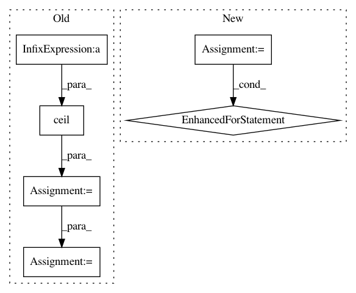

e8a8edec508fcf886d5c6329ff0729b1cff845e8,hicexplorer/utilities.py,,exp_obs_matrix_norm,#Any#Any#Any#,287
Before Change
expected_interactions_in_distance_ = expected_interactions_norm(pLength_chromosome, pChromosome_count, pSubmatrix)
row, col = pSubmatrix.nonzero()
distance = np.ceil(np.absolute(row - col) / 2).astype(np.int32)
if len(pSubmatrix.data) > 0:
data_type = type(pSubmatrix.data[0])
expected = expected_interactions_in_distance_[distance]
pSubmatrix.data = pSubmatrix.data.astype(np.float32)
pSubmatrix.data /= expected
pSubmatrix.data = convertInfsToZeros_ArrayFloat(pSubmatrix.data).astype(data_type)
return pSubmatrix
def toString(s):
After Change
row, col = pSubmatrix.nonzero()
// data = pSubmatrix.data.tolist()
for i in range(len(row)):
expected = expected_interactions_in_distance[np.absolute(row[i]-col[i])]
expected /= row_sums[row[i]] * row_sums[col[i]] / total_interactions
pSubmatrix.data[i] /= expected
return pSubmatrix
def toString(s):
In pattern: SUPERPATTERN
Frequency: 3
Non-data size: 6
Instances
Project Name: deeptools/HiCExplorer
Commit Name: e8a8edec508fcf886d5c6329ff0729b1cff845e8
Time: 2018-09-04
Author: wolffj@informatik.uni-freiburg.de
File Name: hicexplorer/utilities.py
Class Name:
Method Name: exp_obs_matrix_norm
Project Name: SpiNNakerManchester/sPyNNaker
Commit Name: ef3b051ba0dc69a02f0d7aa8e955bea26b334f51
Time: 2020-09-30
Author: alan.barry.stokes@gmail.com
File Name: spynnaker/pyNN/utilities/bit_field_utilities.py
Class Name:
Method Name: get_estimated_sdram_for_bit_field_region
Project Name: yangyanli/PointCNN
Commit Name: 632ffd19e4edb2077b2c27a50f1654b7453797e6
Time: 2019-03-28
Author: burui11087@gmail.com
File Name: data_conversions/prepare_semantic3d_filelists.py
Class Name:
Method Name: main